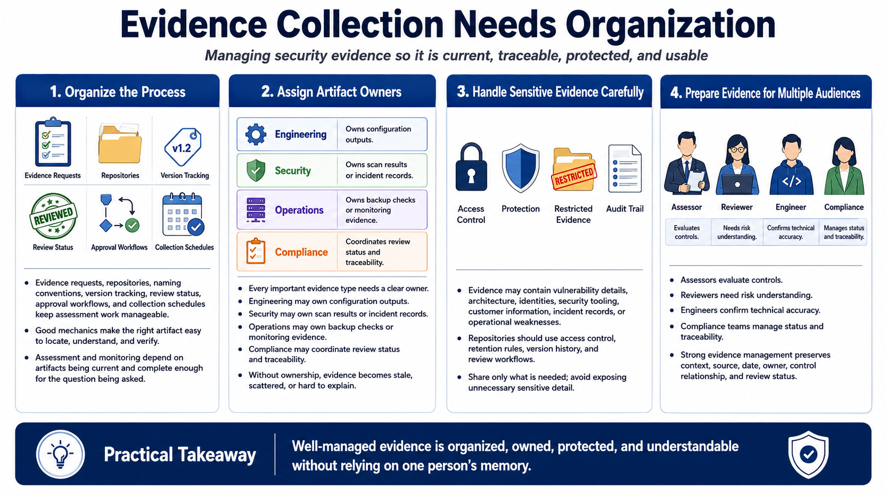

Evidence Collection and Management
Connecting to LMS... Progress: in progress

Narration
Evidence collection needs organization. Teams often work from evidence request lists, artifact owners, repositories, naming conventions, version tracking, review status, approval workflows, and collection schedules. The mechanics matter because assessment and monitoring depend on being able to locate the right artifact, understand what it represents, and determine whether it is current and complete enough for the question being asked.
Artifact ownership is a practical control. Someone should be responsible for producing, maintaining, explaining, and refreshing each important evidence type. Engineering may own configuration outputs. Security may own scan results or incident records. Operations may own backup checks or monitoring evidence. Compliance may coordinate review status. Without owners, evidence often becomes stale, scattered, or difficult to explain under review pressure.
Sensitive evidence handling deserves deliberate planning. Evidence may contain vulnerability details, network architecture, identities, security tooling, customer information, incident records, or operational weaknesses. Repositories should use access control, appropriate retention, version history, and review workflows. Teams should understand which artifacts can be broadly shared, which require tighter handling, and how to provide evidence without exposing unnecessary sensitive detail.
Evidence should be prepared for multiple audiences. Assessors need to evaluate controls. Reviewers need to understand risk. Engineers need to confirm technical accuracy. Compliance teams need to manage status and traceability. Good evidence management makes artifacts understandable without relying on one person's memory. It preserves context, source, date, owner, control relationship, and review status so stakeholders can use the evidence efficiently.